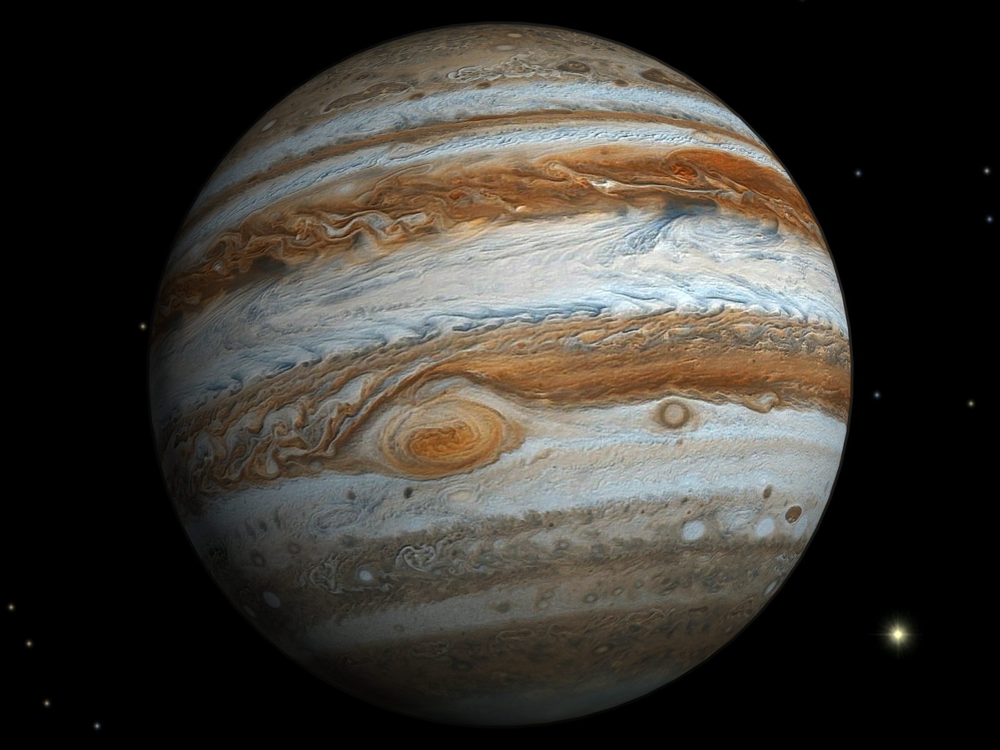
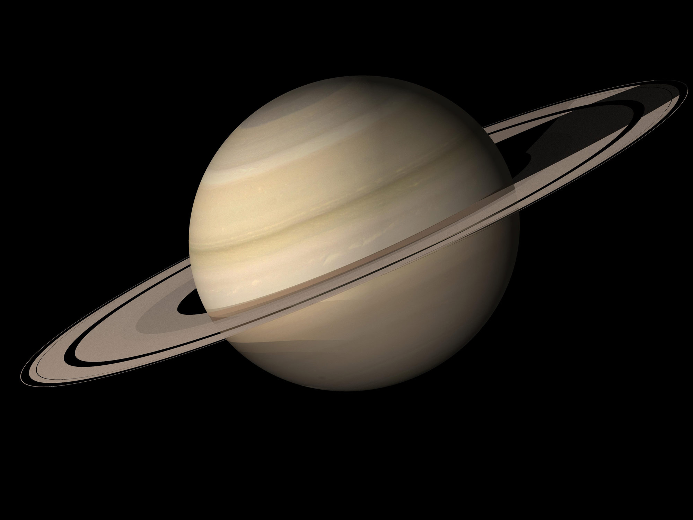

|  |  |
 | ||
|---|---|---|---|---|
| Name | Jupiter | Mercury | Mars | Saturn |
| Mass(kg) | 1.90 x 1027 | 3.30 x 1023 | 6.42 x 1023 | 5.69 x 1026 |
| Diameter(km) | 142,800 | 4879 | 6794 | 120,536 |
| Mean density(kg/m3) | 1326 | 5427 | 3933 | 687 |
| Escape velocity(km/s) | 59.5 | 4.3 | 5.0 | 35.5 |
| Average distance from Sun(km) | 778,412,020 | 57,909,175 | 227,936,640 | 1,426,725,400 |
| Rotation period (length of day in Earth days) | 9.9 hours | 1407.6 hours | 24.6 hours | 10.7 hours |
| Revolution period (length of year in Earth days/years) | 11.86 years | 88 days | 2687 days | 29.46 years |